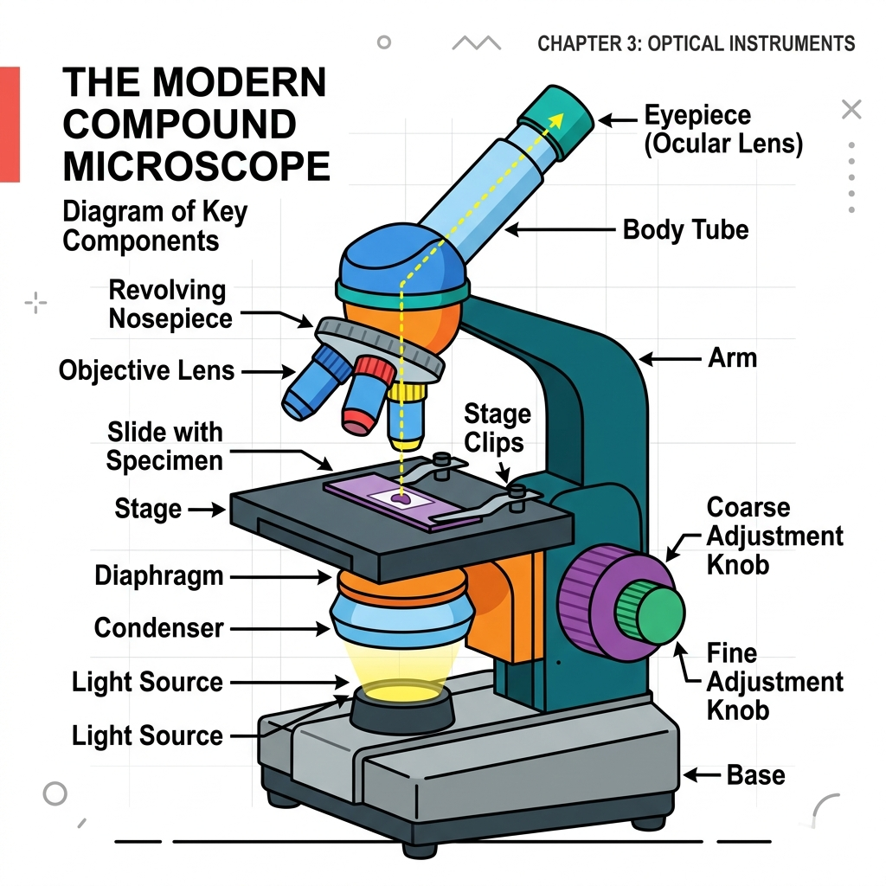
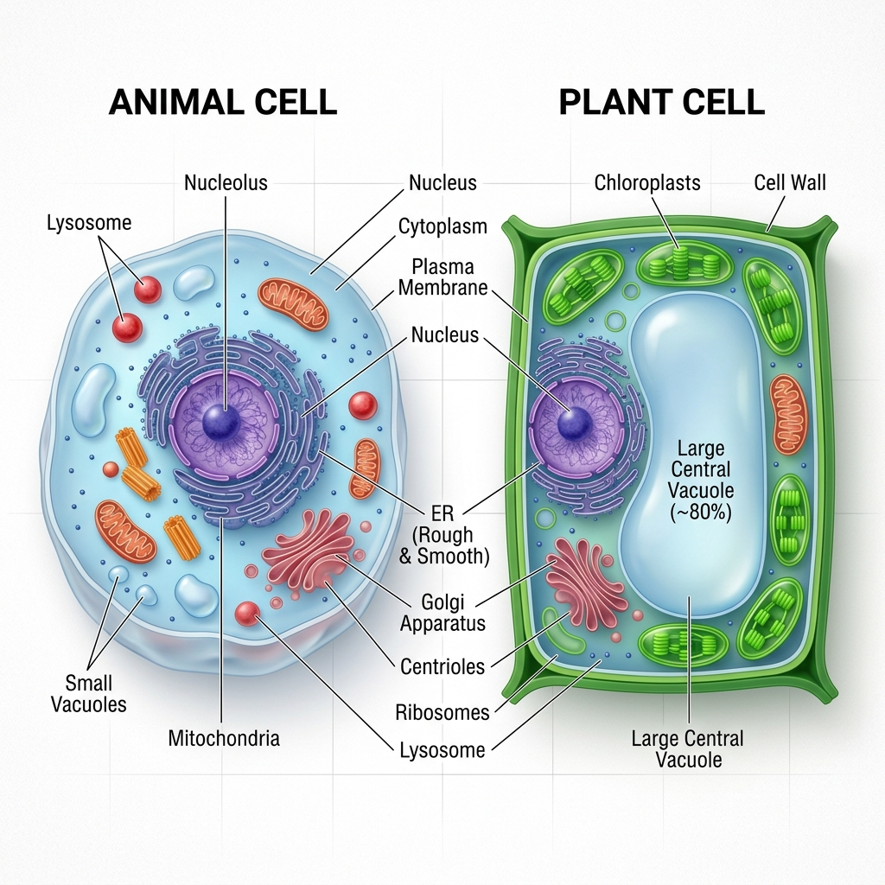
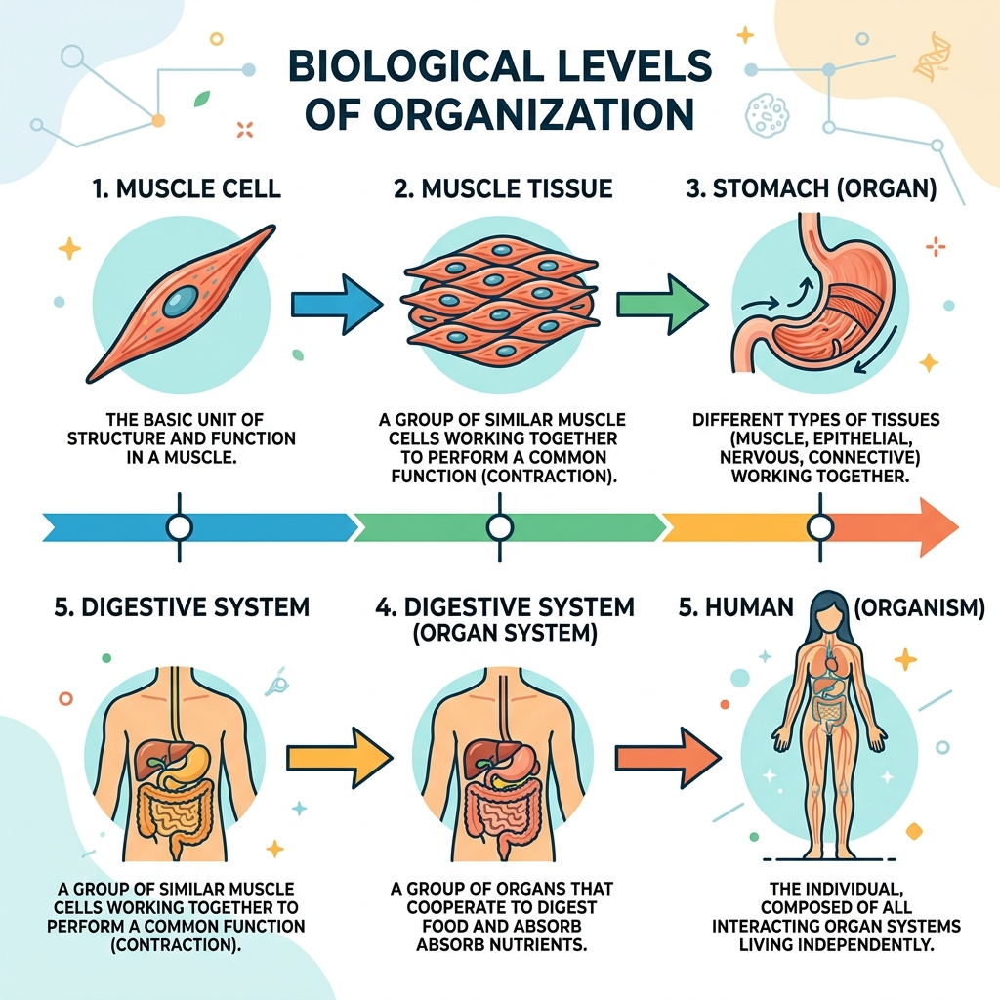
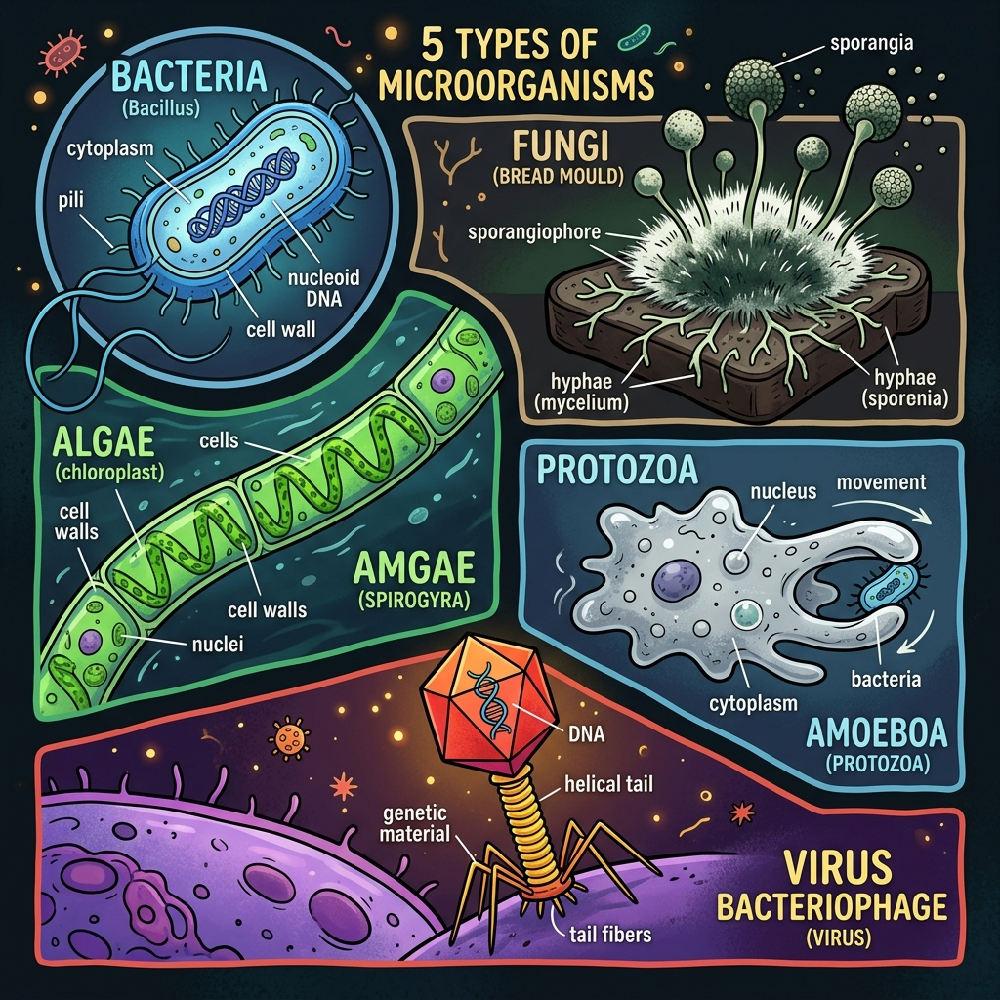
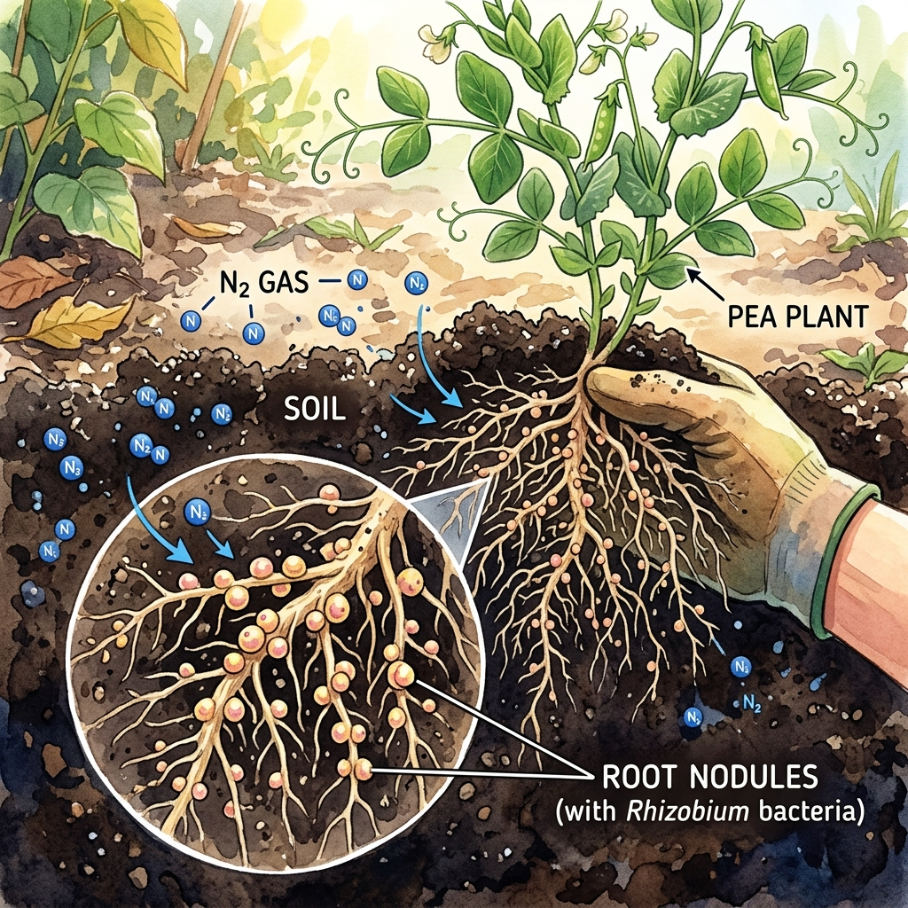

Vardaan Learning Institute
Class 8 Science • Chapter Notes
🌠vardaanlearning.com
📞 9508841336
The Invisible Living World: Beyond Our Naked Eye
1. Introduction to the Microscopic World

There is an entire world of living organisms around us that are too small to be seen with the naked eye. These tiny organisms live in air, water, soil, food, and even inside our bodies. We discovered them only after the invention of special tools like lenses and microscopes.
Concept
Microscope: A scientific instrument that makes extremely small objects look much larger. The word comes from Greek words 'micro' (small) and 'scope' (to look).
Invention of the Microscope
- Hans and Zacharias Janssen: Built the first compound microscopes in the late 16th century using two lenses in a tube.
- Robert Hooke (1665): Used an early microscope to observe a thin slice of cork. He saw tiny box-like chambers and gave them the name 'cells'. He published his sketches in the book Micrographia.
- Antonie van Leeuwenhoek: Known as the "Father of Microbiology", he improved lenses and became the first person to observe living single-celled organisms like bacteria and protozoa in a drop of water.
Fact
There are two main types of microscopes today: Compound Microscopes (use lenses and light, magnifying up to 2000x) and Electron Microscopes (use beams of electrons, magnifying up to 10,00,000x to show deep inner cell details).
2. Cell: The Building Block of Life

A cell is the smallest structural and functional unit of life. All living things are made of cells. Despite being tiny, cells perform all life functions like growing, making energy, and reproducing.
Basic Parts of a Cell
- Cell Membrane (Plasma Membrane): A flexible, living boundary that surrounds the cell. It acts as a gatekeeper, controlling what goes in and out.
- Cell Wall: A thick, rigid outer layer made of cellulose. Found ONLY in plant cells. It gives plants strength and shape.
- Nucleus: The "control center" or "brain" of the cell. It contains genetic material (DNA) that directs all cell activities.
- Cytoplasm: A jelly-like fluid inside the cell where all chemical reactions happen and where organelles float.
- Cell Organelles: Specialized parts inside the cytoplasm (e.g., Mitochondria for energy, Chloroplasts/Plastids in plants for making food, and Vacuoles for storage).
3. Variation in Cells and Body Organization

Cells are not all the same; they vary greatly in shape, size, and number depending on their specific job.
Variation in Shape
- Neurons (Nerve Cells): Long and branched to transmit electrical signals quickly across the body.
- Muscle Cells: Spindle-shaped to contract and relax for movement.
- Red Blood Cells (RBCs): Biconcave discs to carry oxygen through narrow blood vessels.
- White Blood Cells (WBCs): Irregular shape to squeeze through vessels and eat harmful microbes.
Variation in Number (Unicellular vs. Multicellular)
- Unicellular Organisms: Made of only ONE single cell that does everything (e.g., Amoeba, Paramecium, Bacteria).
- Multicellular Organisms: Made of millions of cells dividing the work (e.g., Humans, Trees, Earthworms).
Body Levels of Organization
In multicellular beings, cells are organized in a step-by-step manner:
Cell → Tissue → Organ → Organ System → Organism
4. Types of Microorganisms

Microorganisms are broadly classified into five main groups based on their structure and behavior:
- Bacteria: Simplest, single-celled, oldest living beings. They have no true nucleus (prokaryotic). Classified by shape: Bacilli (rod), Cocci (spherical), Spirilla (spiral), Vibrio (comma).
- Fungi: Plant-like but cannot make their own food (no chlorophyll). Examples: Yeast (unicellular), Bread mould, Mushrooms (multicellular). They absorb food from dead matter.
- Algae: Simple aquatic plants that CAN make their own food (autotrophs) using chlorophyll. Examples: Spirogyra, Chlamydomonas.
- Protozoa: "First animals." Single-celled, heterotrophic (feed on others). They can move using pseudopodia (Amoeba), cilia (Paramecium), or flagella (Euglena).
Important
Viruses are a special case! They are considered the connecting link between living and non-living things. Outside a body, they act like dead particles. But once they enter a living host cell, they hijack it to multiply. Examples: Flu virus, HIV, COVID-19.
5. Microorganisms: Friends and Foes
Microbes play a dual role in our lives—many are highly useful, while some are dangerous troublemakers.
Microbes as Friends (Helpful)

- In Food: Lactobacillus bacteria turn milk into curd. Yeast is used in baking (making bread rise by releasing carbon dioxide) and brewing (alcohol).
- Cleaning the Environment: Bacteria and fungi act as decomposers. They break down dead plants and animal waste into nutrient-rich compost and produce biogas.
- Soil Fertility: Rhizobium bacteria live in the root nodules of leguminous plants (like peas and beans) and fix atmospheric nitrogen into the soil, acting as a natural fertilizer.
- Medicines: Fungi (like Penicillium) and bacteria are used to produce Antibiotics to cure diseases. Microbes are also used to make Vaccines.
Microbes as Foes (Pathogens)
Harmful microorganisms that cause diseases are called pathogens.
- In Humans: Cause diseases like cholera, tuberculosis, common cold, and malaria.
- In Animals: Cause Anthrax and Foot-and-mouth disease.
- In Plants: Cause Citrus canker, Potato blight, and Wheat rust, destroying farmers' crops.
- Food Spoilage: Fungi and bacteria grow on moist food, rotting it and causing food poisoning.
6. Microalgae: The Tiny Powerhouses
Microalgae are microscopic aquatic plants that produce more than half of the oxygen on Earth. They form the base of the aquatic food chain.
- Biofuels: Certain microalgae are processed to make eco-friendly, renewable fuels.
- Superfoods: Spirulina is a type of microalga rich in protein, vitamins, and iron, heavily used in health supplements globally.